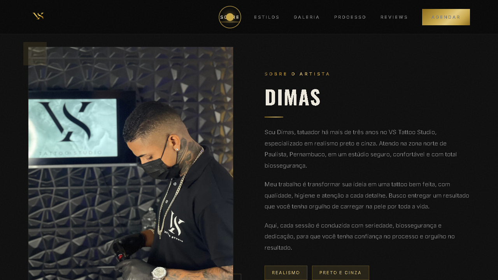
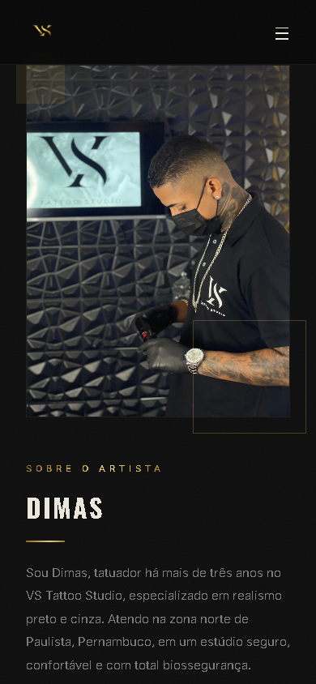

O artista, os estilos e a galeria de trabalhos reunidos em um site com acesso direto ao agendamento.
Site publicado

Minha participação
Do primeiro layout ao site no ar.
- Design e conteúdoLayout, textos, imagens e vídeo.
- DesenvolvimentoHTML, CSS e JavaScript, com adaptação para celular.
- PublicaçãoSite no ar e configuração do domínio.